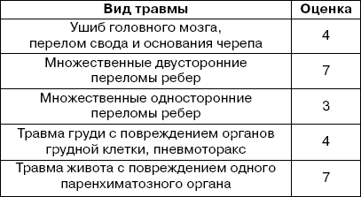

Травматический шок – это патологическое и критическое состояние организма, возникшее в ответ на травму, при котором нарушаются и угнетаются функции жизненно важных систем и органов. В течение травматологического шока различают торпидную и эректильную фазы.
По времени возникновения шок может быть первичным (1–2 ч) и вторичным (более 2 ч после травмы).
Эректильная стадия или фаза возникновения. Сознание сохраняется, больной бледный, беспокойный, эйфоричный, неадекватен, может кричать, куда—то бежать, вырываться и т. п. В эту стадию происходит выброс адреналина, за счет чего давление и пульс некоторое время могут оставаться в норме. Длительность этой фазы от нескольких минут и часов до нескольких дней. Но в большинстве случаев носит короткий характер.
Торпидная фаза сменяет эректильную, когда больной становится вялым и адинамичным, снижается артериальное давление и появляется тахикардия. Оценки объема тяжести травмы приведены в таблице.
Оценка объема тяжести травмы

После подсчета баллов получившееся число умножают на коэффициент (от 1,2 до 2,0).
Лечение. Основные направления в лечении.
1. Устранение действия травмирующего агента.
2. Устранение гиповолемии.
3. Устранение гипоксии.